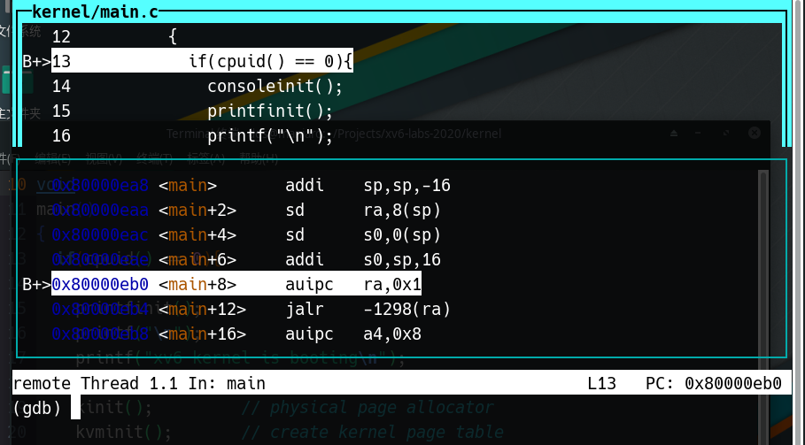

使用GUN Debugger
6.828的GDB
我们提供一个名为.gdbinit的文件，自动设置GDB以用于QEMU
- 必须在lab或xv6目录中运行GDB
- 编辑~/.gdbinit以执行其他需要的GDB初始化
以带有或不带有GDB的方式使用
make指令启动QEMU- 带有GDB：运行
make qemu[-nox]-gdb，然后在第二个Shell中启动GDB（iscv64-linux-gnu-gdb） - 如果以单核方式启动，则使用
make CPUS=1 qemu-gdb - 不带有GDB：当不需要GDB时使用
make qemu[-nox]命令
- 带有GDB：运行
GDB命令
- 当你不知道某个命令怎么使用时，运行
help <命令名称>来获取帮助 - 在无歧义的情况下，所有命令都可以被简写
c`=`co`=`cont`=`continue
- 一些额外的简写已经被定义,例如
s`=`step` 以及 `si`=`stepi
单步调试
step一次运行一行代码。当有函数调用时，它将步进到被调用的对象函数。next也是一次运行一行代码。但当有函数调用时，它不会进入该函数。stepi和nexti对于汇编指令是单步调试。
所有命令都可以采用一个数字参数来指定重复执行的次数。按回车键将重复上一个命令。
运行调试
continue运行代码，直到遇到断点或使用<Ctrl-c>中断它finish运行代码，直到当前函数返回advance <location>运行代码，直到指令指针到达指定位置
断点
break <location>在指定的位置设置断点。 位置可以是内存地址(*0x7c00)或名称(monbacktrace，monitor.c:71)如需修改断点请使用
delete，disable，enable
条件断点
break <location> if <condition>在指定位置设置断点，但仅在满足条件时中断。cond <number> <condition>在现有断点上添加条件。
监视点
类似于断点，但条件更为复杂。
watch <expression>每当表达式的值更改时，将停止执行watch -l <address>每当指定内存地址的内容发生变化时，就会停止执行。- 命令
wa var和wa -l &var有什么不同呢?
- 命令
rwatch [-l] <expression>将在读取表达式的值时停止执行。
检查命令
x以您指定格式（x/x表示十六进制，x/i表示汇编，等等）打印内存的原始内容。print计算一个C表达式并将结果以合适的类型打印。它通常比x更有用- 使用
p *((struct elfhdr *) 0x10000)的输出比x/13x 0x10000的输出好得多
其他检查命令
info registers打印每个寄存器的值info frame打印当前栈帧list <location>在指定位置打印函数的源代码backtrace或许对于你的lab1中的工作很有用处
布局
GDB有一个文本用户界面，在curses用户界面中显示有用的信息，如代码列表、反汇编和寄存器内容
layout <name>切换到给定的用户界面
例如layout split，效果如下

其他技巧
- 你可以使用
set命令在执行期间更改变量的值。 - 你必须切换符号文件才能获得除内核以外环境的函数和变量名。例如，当调试JOS时：
symbol-file obj/user/<name>
symbol-file obj/kern/kernel
符号文件（Symbol Files）是一个数据信息文件，它包含了应用程序二进制文件（比如：EXE、DLL等）调试信息，专门用来作调试之用，最终生成的可执行文件在运行时并不需要这个符号文件，但你的程序中所有的变量信息都记录在这个文件中。所以调试应用程序时，这个文件是非常重要的。用 Visual C++ 和 WinDbg 调试程序时都要用到这个文件。
其他
layout asm：查看汇编
layout reg：查看寄存器
info reg：查看寄存器
b *0x1234：在指定地址设定断点
QEMU使用
Ctrl+a c：进入控制模式
info mem：打印页表
总结
- 使用
help命令查看使用手册 - GDB是非常强大的，我们今天只触及表面
- 花费一个小时的时间学习如何使用GDB是非常值得的